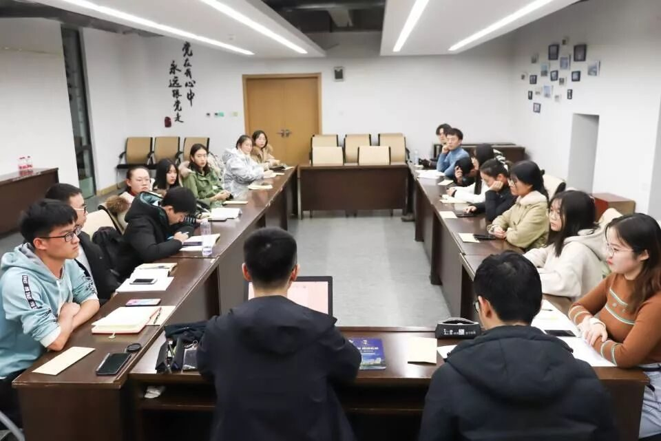
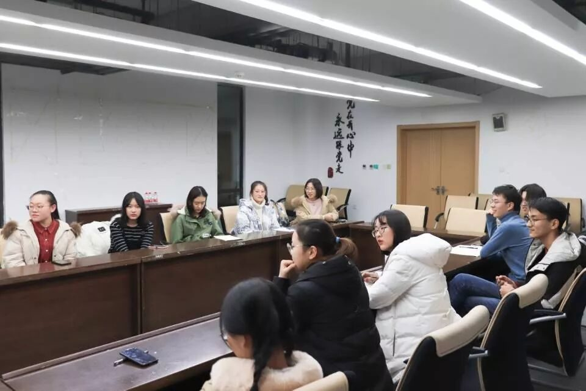
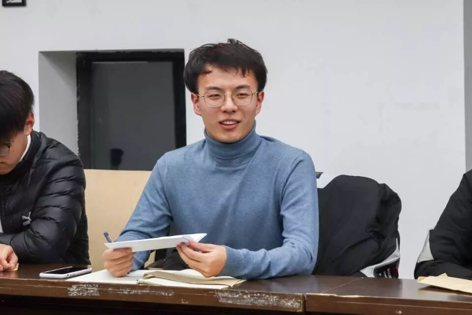
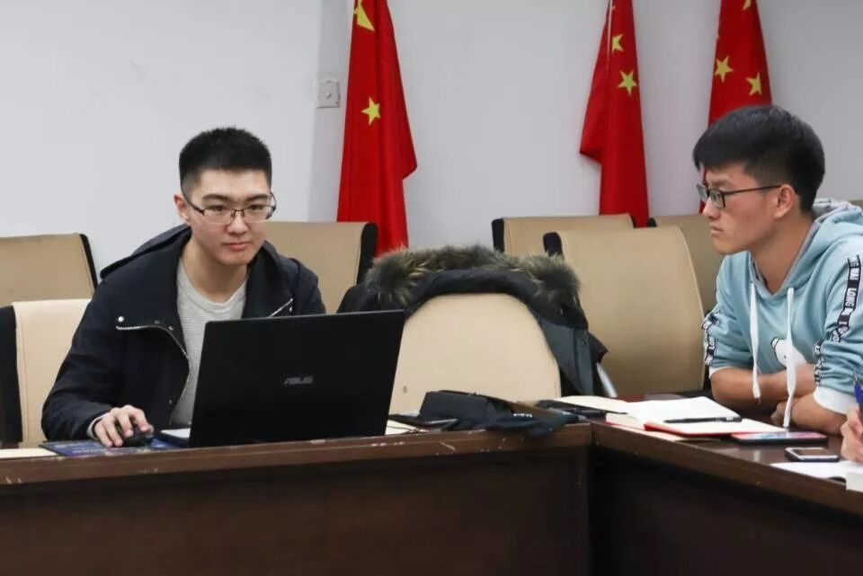
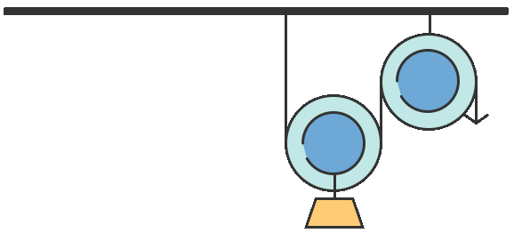

【行者无疆 言念潇湘】团队见面会

墨书行者 笔走潇湘
——第七期行者无疆见面会
这并不是一场庄严肃穆的见面会
而是行者独有的一次心灵的碰撞和交流
🤔🤔🤔🤔


一周前，我怀揣着一颗忐忑的心走向你，希望和你一起共赴这场文化苦旅；而现在，还是同样的地点，我已是团队中的一员，在静谧的夜晚听你讲述行者无疆的那些故事，我将和你一起开始下一段征途。
“相逢似初见，回首胜一生”
因为文化，我们跋山涉水，只为赴一场湖湘的邀约；
因为热爱，我们不负青春，甘愿踏一程文化的苦旅。
申报表格中的答案，书写的是对中华文化执着的追求；
自我介绍时的言语，表达的是对行者大家庭的热爱。
11位新成员加上8位老行者，赋予了19人全新的含义。
因为我们，19人得以蕴含对文化无限的向往。
因为我们，19人得以诠释对远方不懈的追寻。

“行不止者，其远必臻”
这场我们期待已久的见面会，在队长“欢迎大家”的开场白中拉开了序幕。简单的破冰行动之后，我们这一群“正经”的行者，便一瞬间打成了一片。

首先，本次带队队长段智然介绍了我们团队本次的调研主题与工作安排，随后每个工作组的组长分别对自己的组员进行了工作方面具体的阐释与要求。欢笑从见面会开始的一刻便到了场，充盈着见面会的每分每秒。在队长幽默的语言下，规章制度、团队行程的介绍轻松摘下了“无聊”与“死板”的标签，变得出奇的有趣。

“今夕复何夕，共此灯烛光”
往届学长学姐的留言，让我们深爱上了这个大家庭。
每个人手中的姓名，将我们的心紧紧的系在了一起。
或许，我们曾为面试随机的提问而紧张；
或许，我们曾为是否会被团队录用而忐忑。
不过万幸，
我们终没有缺席这场行者的相遇。
这场文化之旅，
有你，有我，有我们。
来源 | 行者无疆实践团
文字 | 胡至鸿
排版 | 张清雅
审核 | 段智然 康艳虎
行者无疆实践团
QQ：2758025831

随行者一起认识世界
长按二维码